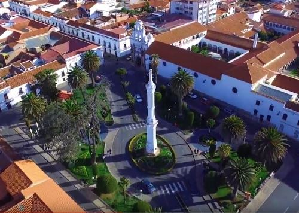

La ciudad fue fundada sobre los asentamientos indígenas de los indios charcas
un 29 de septiembre de 1538, por el general español Pedro Anzures con el nombre
de «Villa de La Plata de la Nueva Toledo» lo que la convierte en la ciudad más
antigua de Bolivia. En 1776 se cambia el nombre a «Ciudad de Chuquisaca», y desde
la independencia de Bolivia en 1826, cuando se le da el rol de capital, se la
renombra como «La Ilustre y Heroica Sucre» en honor al héroe de la independencia
Antonio José de Sucre. Cabe destacar que entre lo más llamativo de la historia de
la capital se encuentra su revolución, la cual marca el comienzo de los movimientos
independentistas en América Latina, un 25 de mayo de 1809.
La Ilustre y Heroica Sucre o también La Ilustre y Heroica Ciudad de Sucre,
es la capital oficial de Bolivia.Es además la sede del Poder Judicial del país e
igualmente es capital del departamento de Chuquisaca. La ciudad ha sido designada
Patrimonio de la Humanidad por la Unesco en 1991.Según datos del censo INE 2012,
el municipio de Sucre cuenta con una población de 261 201 habitantes.
Además de ser la segunda ciudad capital más alta del mundo después de Quito.

La actual ciudad de Sucre (La Plata) fue sede de la Real Audiencia de Charcas
hasta la declaración de independencia de Bolivia en 1825, cuando se sustituyó por
la Corte Superior de Chuquisaca. Sucre fue conocida como Chuquisaca desde la
República y ejerció como capital provisional, hasta que en el tercer Gobierno de
Velasco fue escogida como capital constitucional y se le ratificó el nombre de
Sucre. Mantuvo el poder de los tres poderes del Estado (ejecutivo, legislativo y
judicial) hasta la llamada Guerra Federal, cuando un grupo de políticos liberales
paceños, tras una guerra civil en 1899, llevaron de facto los Poderes Ejecutivo y
Legislativo a La Paz, donde han quedado hasta la actualidad. Actualmente,
Sucre es oficialmente la capital constitucional y sede del Poder Judicial de
Bolivia, así como la capital del departamento de Chuquisaca